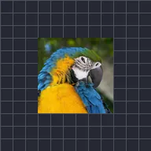

آفسیٹ

لیئر کی تصویر کو ہٹاتا ہے، اور لیئر کے باکس کے کناروں پر اسے لپیٹ دیتا ہے۔
سیٹنگز
| سیٹنگ | قسم | رینج | ڈیفالٹ |
|---|---|---|---|
| آفسیٹ | پوائنٹ (X, Y) | -5000 px سے 5000 px تک | 0 px, 0 px |
| فیدر | نمبر | 0 سے 1 تک | 0 |
| لیئر پر ماسک | آن یا آف | – | آف |

لیئر کی تصویر کو ہٹاتا ہے، اور لیئر کے باکس کے کناروں پر اسے لپیٹ دیتا ہے۔
| سیٹنگ | قسم | رینج | ڈیفالٹ |
|---|---|---|---|
| آفسیٹ | پوائنٹ (X, Y) | -5000 px سے 5000 px تک | 0 px, 0 px |
| فیدر | نمبر | 0 سے 1 تک | 0 |
| لیئر پر ماسک | آن یا آف | – | آف |